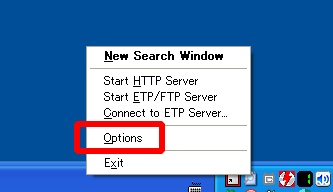
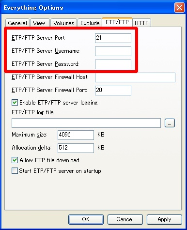
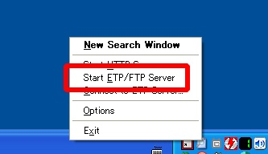
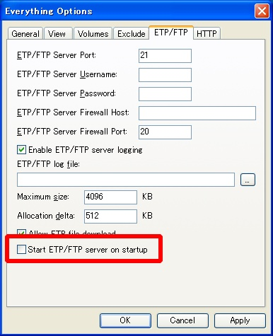
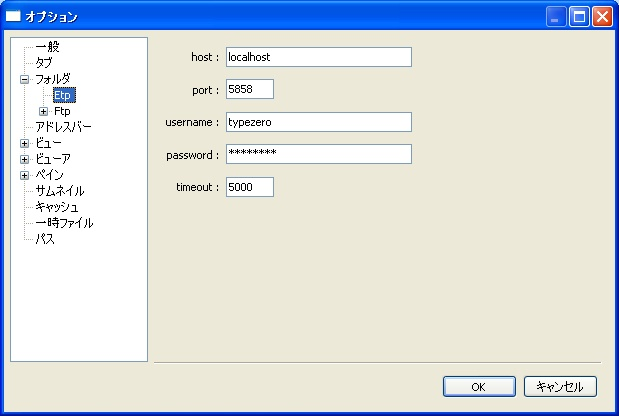

Mebiusbox 2.x ユーザーガイド
ファイル検索(Everything)
ファイル検索ソフト Everything を使ってファイル検索を行うことができます。
実際には、Everything のサーバー機能を使用し、ETP(Everything Transfer Protocol) 通信を行ってファイル検索をしています。
そのため、Everything 本体で検索を行うよりも遅くなりますが、総当りのファイル検索には Mebiusbox 本体の検索よりも十分高速です。
この機能を使用するためには、Everything をインストールし、設定を行う必要があります。
以下では、既に Everything がインストールされ、常駐しているという状態になっているものとします。
Everything 側の設定
Everything の ETP/FTP サーバーを設定し、起動します。
この説明では Everything 1.2.1.371 を使用しています。
設定にはタスクバーの Everything を右クリック、もしくは Everything のメイン画面からメニューから「Option」を選択します。

設定する必要があるのは「ETP/FTP」タブです。

設定する項目は「ETP/FTP Server Port」「ETP/FTP Server Username」「ETP/FTP Server Password」です。
良くわからない人はデフォルトのままで OK です。
設定が終わったらサーバーを起動します。これは、タスクバーの Everything を右クリックか、Everything のメインメニュー「Tools」から、「Start ETP/FTP Server」を選択します。

Everything が起動したときに、このサーバーを自動的に始めたい場合は、オプションの「Start ETP/FTP server on startup」をチェックしてください。

Mebiusbox2 側の設定
Mebiusbox2 側の設定をします。
「ツール > オプション」を選択して、「フォルダ > Etp」を選択します。

host
ETP/FTP サーバーのホスト名。IPアドレス (xxx.xxx.xxx.xxx) でも可能。よくわからない場合はとりあえず「localhost」と入力してください。
port
ETP/FTP サーバーのポート番号username
ETP/FTP サーバーに接続するユーザー名password
ETP/FTP サーバーに接続するユーザーのパスワードtimeout
サーバーとの通信におけるタイムアウト時間設定は以上です。これで検索が利用できるはずです。
検索が出来ていないようだけど？
設定が間違っている可能性があります。
現在、ユーザー名やパスワードが間違っていてもエラー画面が表示されません。
ログには出力されるので、確認してみてください。